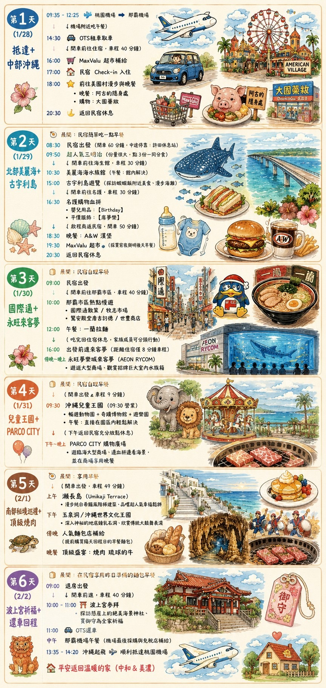

TRIP BOARD
把流程圖變成會讓人期待出發的網站
這版把你的沖繩流程整理成「每日行程、景點圖片、嵌入地圖、附近餐廳與一鍵導航」。手機上也可以直接開 Google Map 做即時導航。

DAY BY DAY
每日行程
像導遊一樣，把每天的重點、節奏與期待感整理好。
GOOGLE MAP
景點圖片與地圖
每個景點都有圖片、Google Map 嵌入地圖，以及「開啟外部 Google Map」按鈕。
A → B NAVIGATION
A 地到 B 地交通選擇
每一段路線都可以選擇開車、步行或大眾交通，點擊後會開啟外部 Google Map 導航。
FOOD NEARBY
景點附近餐廳推薦
依照當天動線安排，優先推薦順路、好查地圖、適合親子或旅途中快速補給的選項。